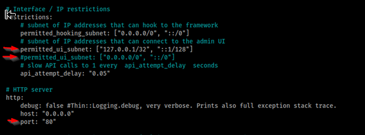

Beef es el Browser Explotation Framework con el podemos automatizar la vulnerabilidad de XSS en un website
Antes de usarlo vamos a cambiar unos settings del mismo
/etc/beef-xss/config.yaml
Vamos a cambiar el permitted_ui_subnet: que tiene "0.0.0.0/0 y lo vamos a comentar
y el otro permitted_ui_subnet lo vamos a de comentar
y cambiamos al puerto que queremos usar

Es muy bueno para montar ataques cuando un website es vulnerable XSS y tiene mas 2000 payloads que podemos hacer
es un tool bien poderoso no necesitamos hacer mucho para correrlo